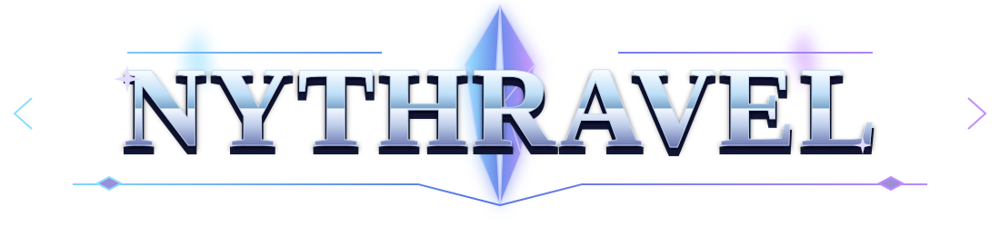

Открываем кристальные врата…
Для игры на разных устройствах используйте «Через сервер (LAN)»: все устройства должны быть в одной Wi‑Fi сети и открыть один адрес. Режим с кодами зависит от поддержки WebRTC/NAT и может не работать через интернет.
Хозяин: «Я хозяин» → отправьте код гостю → вставьте ответ → «Подключить».
Гость: «Я гость» → вставьте код хозяина → «Подключить» → отправьте ответ хозяину.
Введи IP компьютера, где запущен server.js, затем нажми кнопку ниже. Можно указать домен или IP:порт.
«Комната» доступна только в среде, где есть встроенный сервис комнат. В обычном HTML-файле используйте «Через сервер (LAN)».
Хозяин рассчитывает общий игровой мир. Все действия гостя (движение, атаки, навыки, экипировка и инвентарь) отправляются хозяину; полное состояние игроков и мира возвращается всем участникам. На компьютере-хозяине: npm install ws → node server.js. Для интернета порт сервера должен быть доступен извне.